(Click on the the landing pages to view each site!)
The 3 examples I found above are some of my favourite sources of inspiration for web and graphic design, because there is so much novel and interesting material there, and such variety!
Across these archives with such extensive collections, organisation is often achieved through the use of multiple filters that help categorise, and search for the relevant topics. Instead of having a search bar where users need to manually find things, these sites typically provide commonly-searched keywords as buttons that the user can easily select/deselect, which makes the search process significantly easier.
My genuine reaction: "Oh! That's not bad... Okay actually, nevermind"
In terms of structure, Stitch's AI actually did surprisingly well, in terms of getting the correct colour palette, page layout, and even fonts. The level of design is, however, exactly as I had expected; it definitely looks AI-generated. Perhaps because it's just too clean and sterile-looking, and lacks personality.
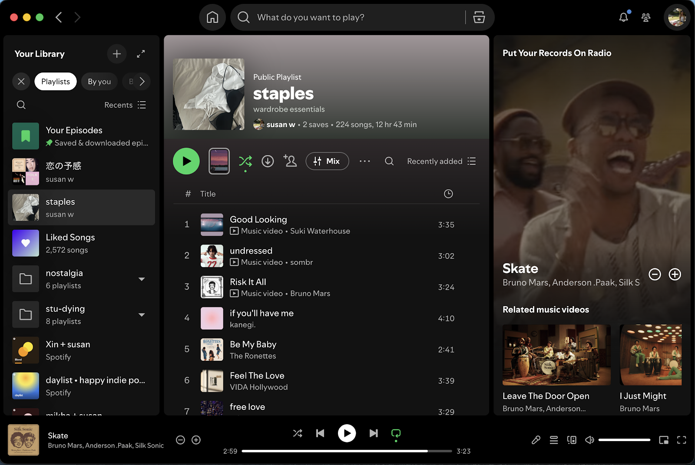
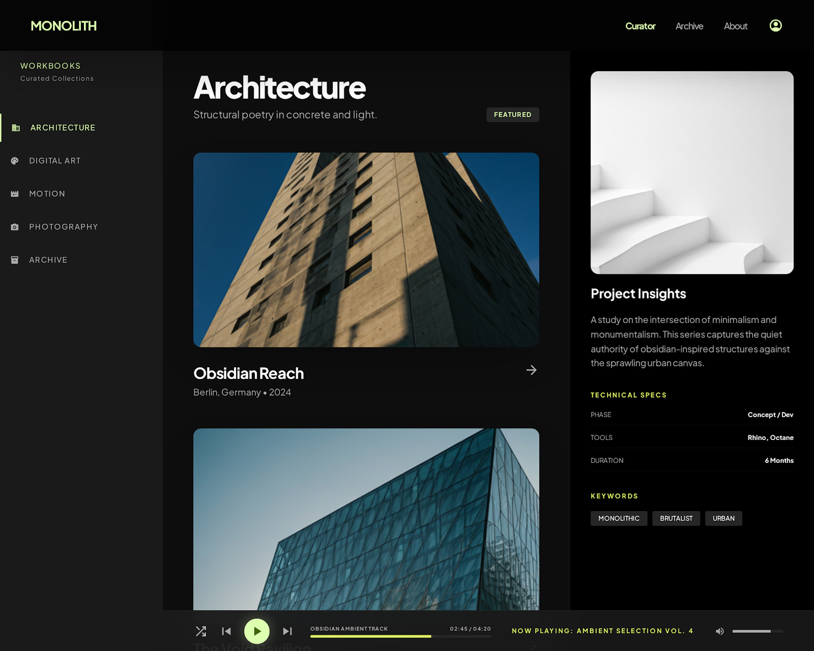
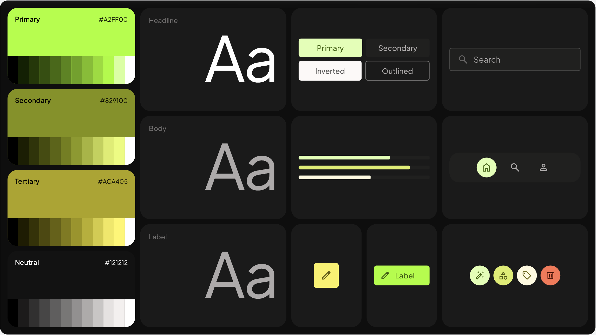
My genuine reaction: "Ew... what even is that"
I don't have much to say for this one, except that I'm relieved - AI is yet to be advanced enough to take over a designer's job! It seemed like the more further I iterated with Stitch, the more confused it became. The resulting designs barely changed (I would even say they got worse...), despite the detailed prompts and even reference images and links I provided. I found myself thinking as I made the final attempt, "How hard can it be? It would be much faster if I just did it myself!"
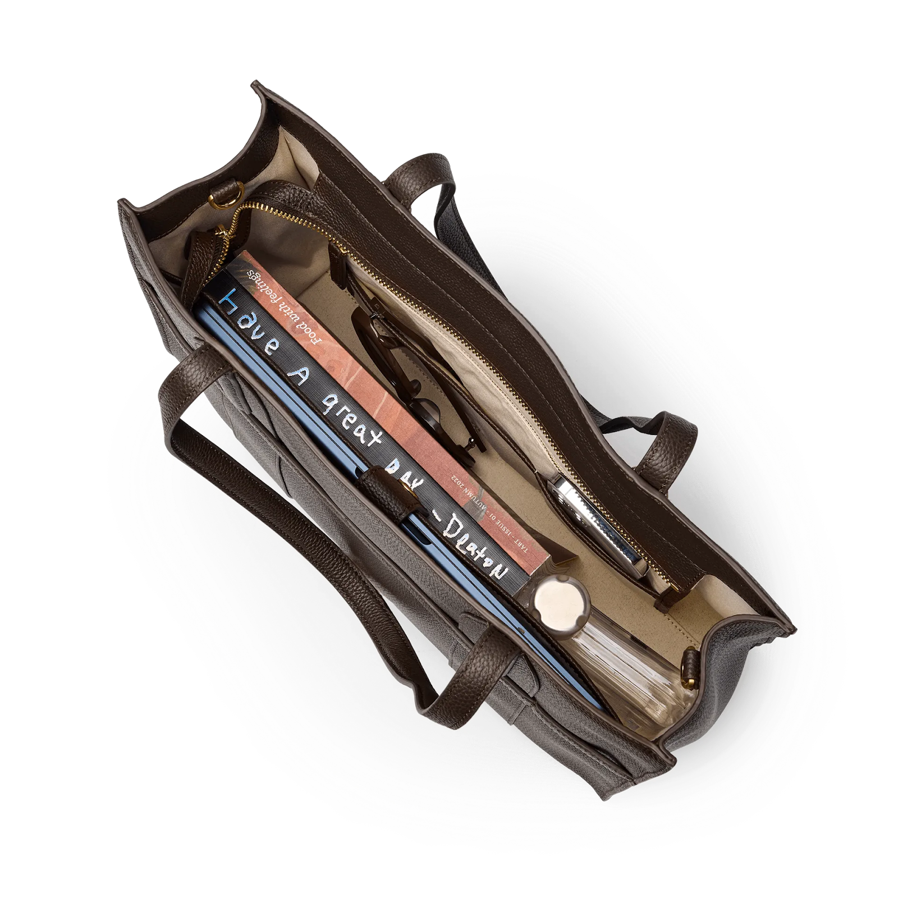
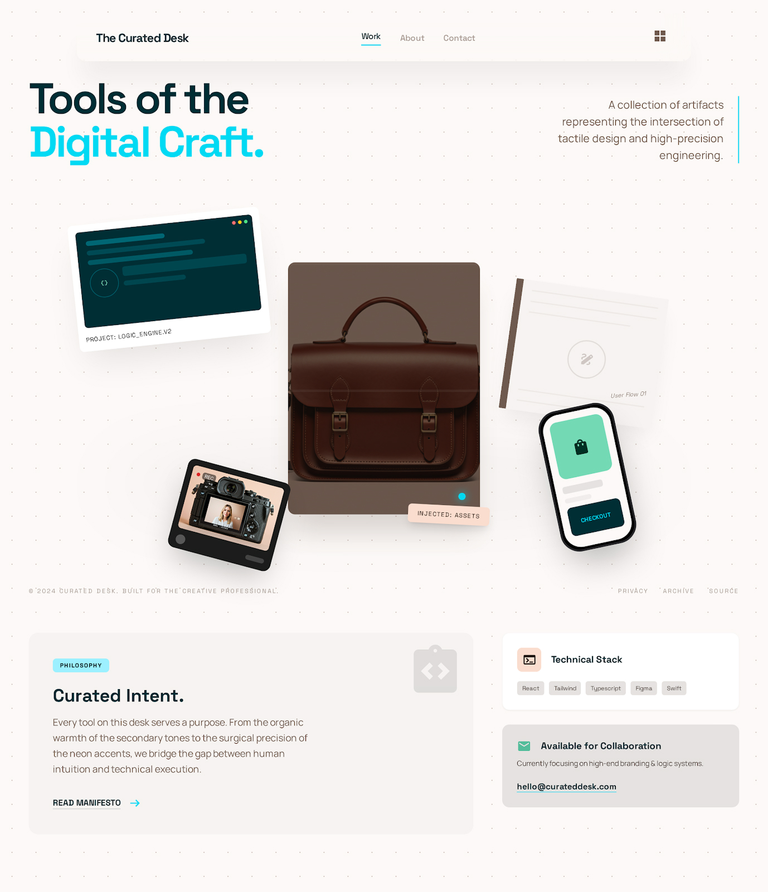
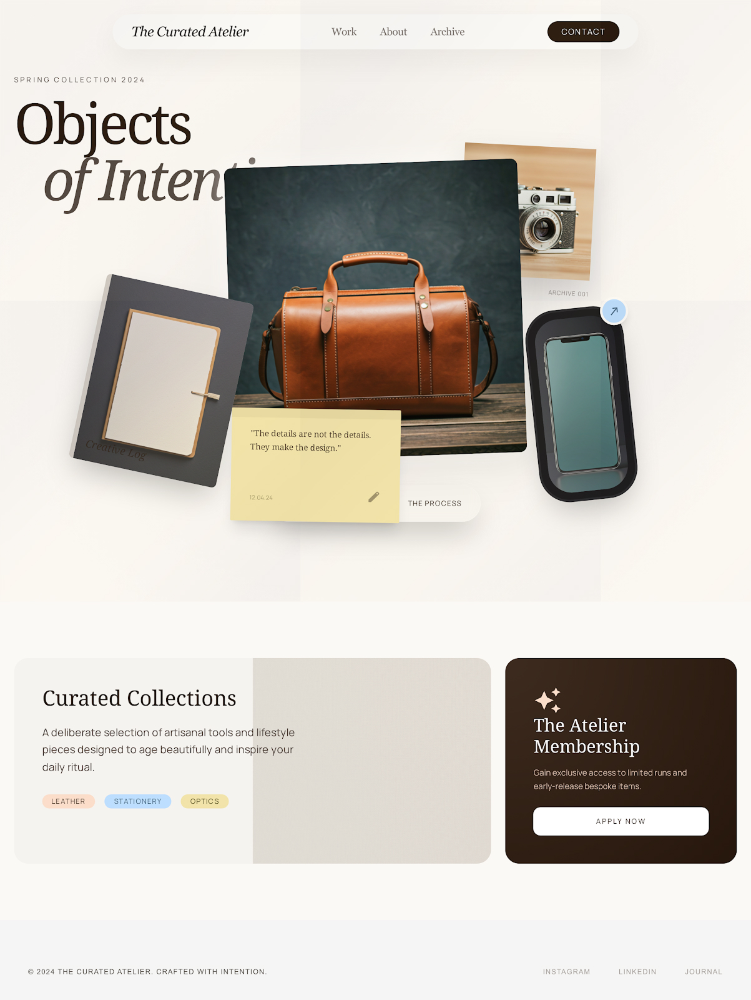
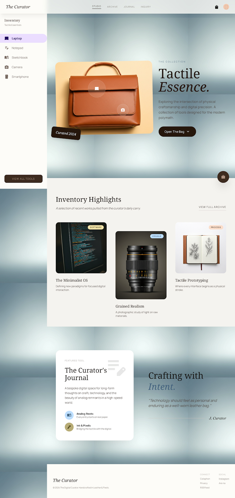
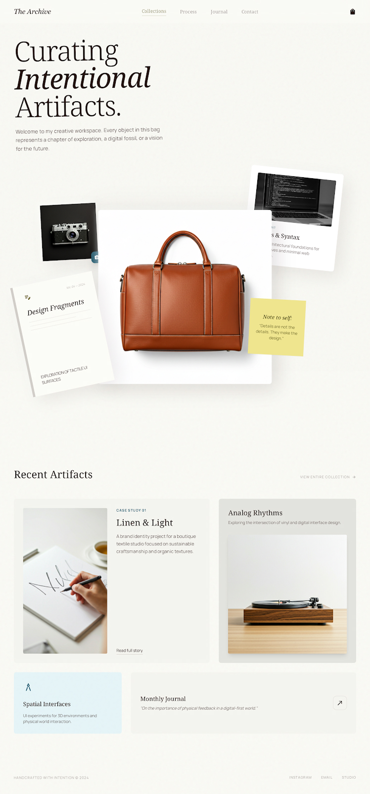
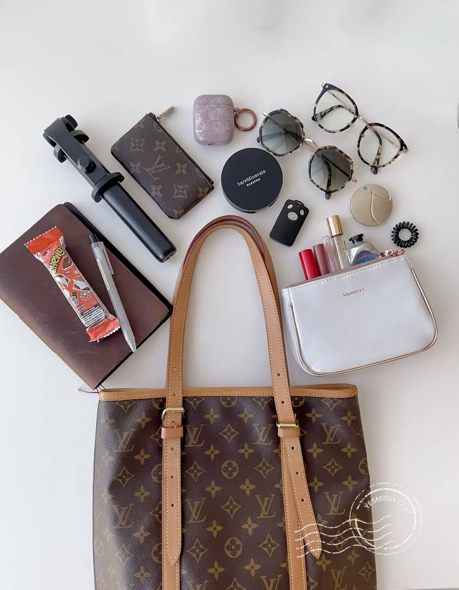
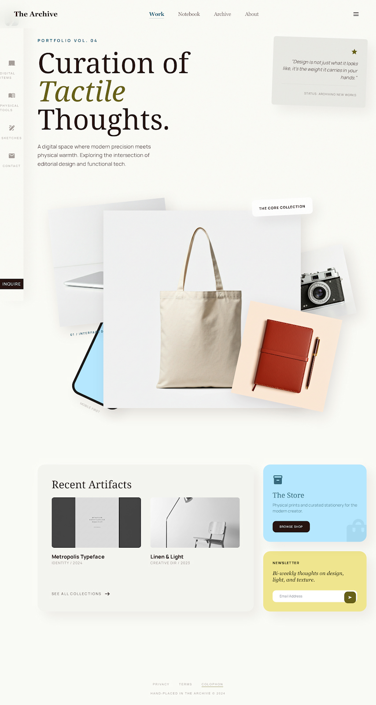
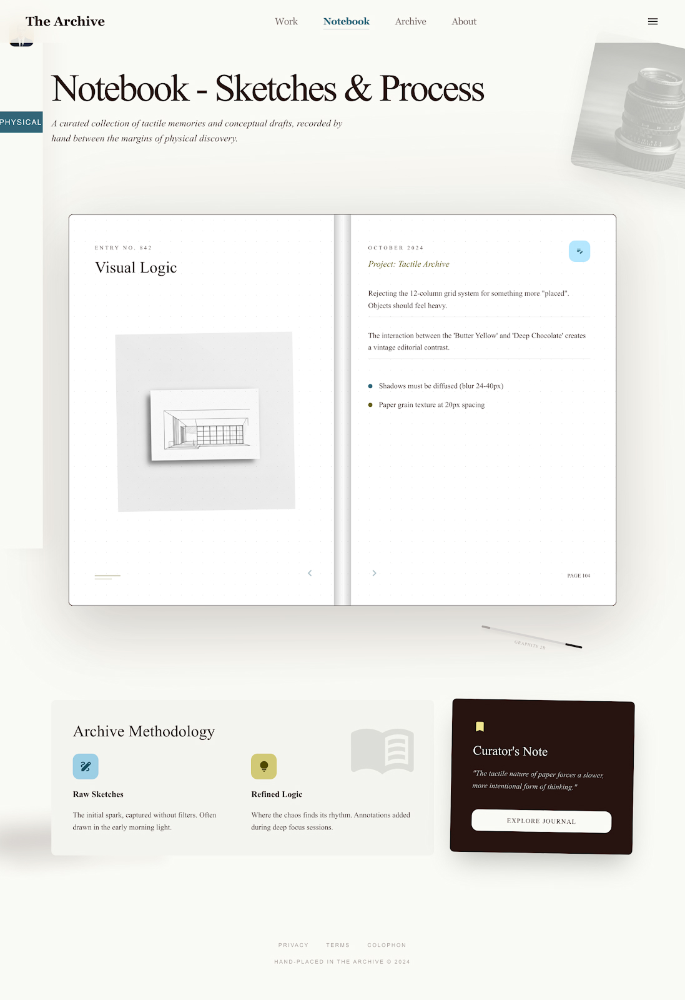
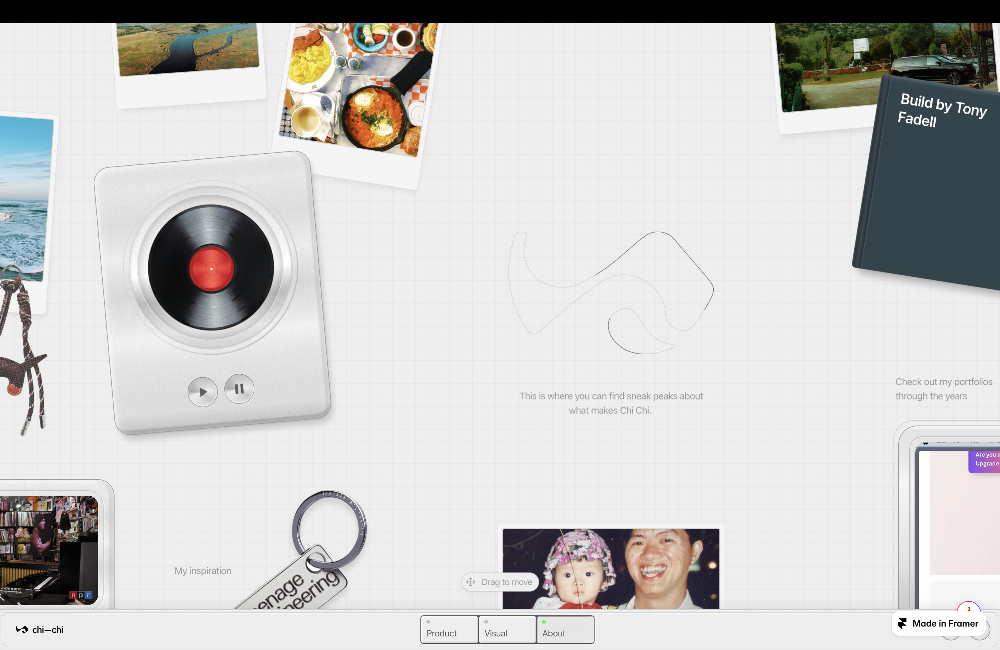
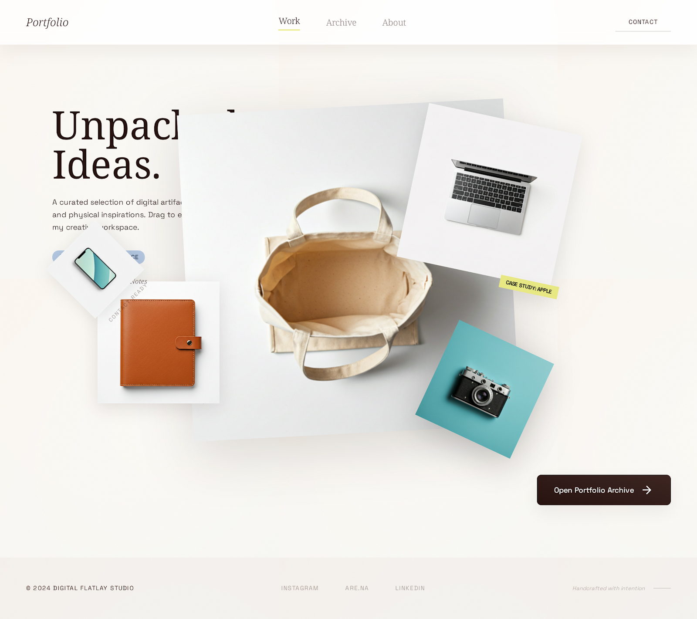
Google Fonts was my best friend this week!
I experimented with a variety of font pairings, playing with the font-size, font-weight, and font-style as well, to find the ones that best matched each page I was producing.
Yes, all the custom fonts you see on this site, I added in this week.
Some other *bling* I added:
insert citation here
Combined various code snippets from to create customised gallery effects on this page:
To replicate the organic, realistic feel I wanted to achieve, I photographed some of the items from my actual bag, and imported them as PNGs. I then made some of them clickable to lead to different pages, each styled accordingly to the item. The other items that aren't linked, I experimented with making them drag-and-drop around the page, just like actual items from a bag.
One challenge I faced was getting the draggable items to be distributed evenly across the page - the clickable items kept separating, while the draggable ones clustered in a pile.
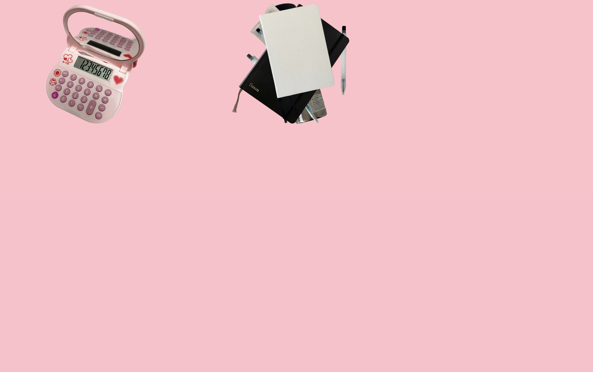
To fix this, I used code snippets from:
https://stackoverflow.com/questions/66177055/how-to-randomly-place-elements-on-a-web-page
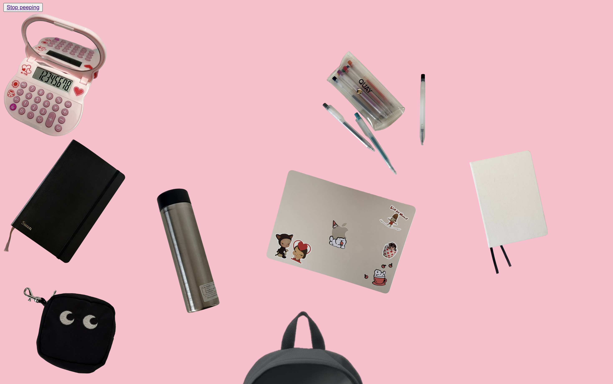
One of the main focuses this week was 'fluid', or responsive design; meaning that the layout of a site should be desigedn with consideration of how well it can be viewed across different devices. My work this week reflects this focus, as out of the 3 weeks of workbook pages, this week's has been the cleanest and most responsive when the window is resized. Meanwhile, the other pages pretty much break if not viewed in desktop.
In class, we looked more at some creative uses of CSS, such as custom cursors and drag-and-drop elements. Although I didn't have enough time to experiment with the fun cursors, I did have a chance to successfully replicate the draggable effect on my homepage.